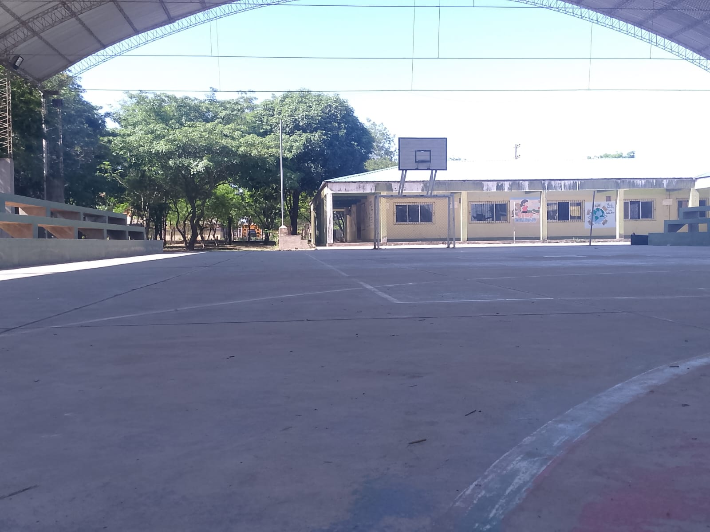
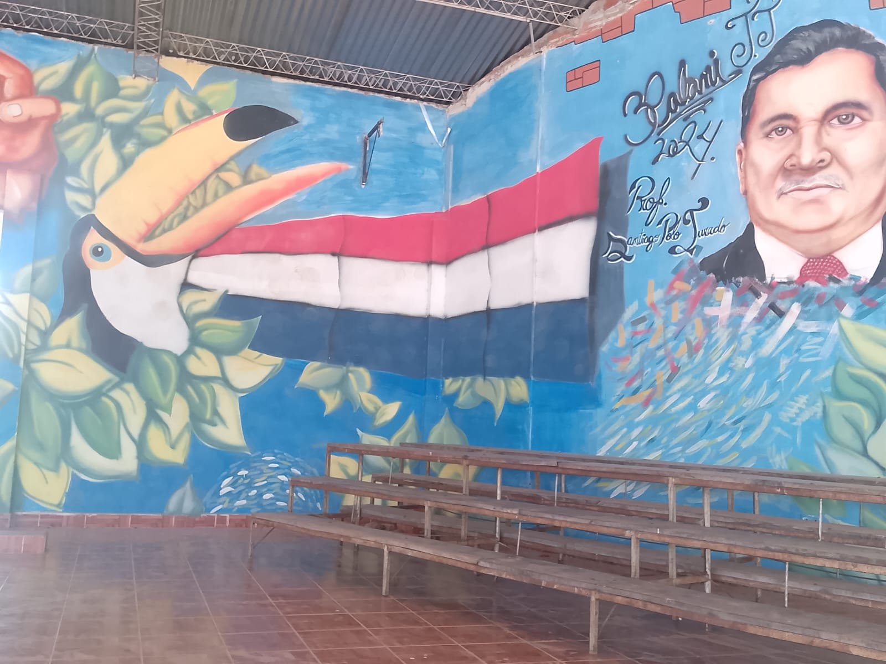
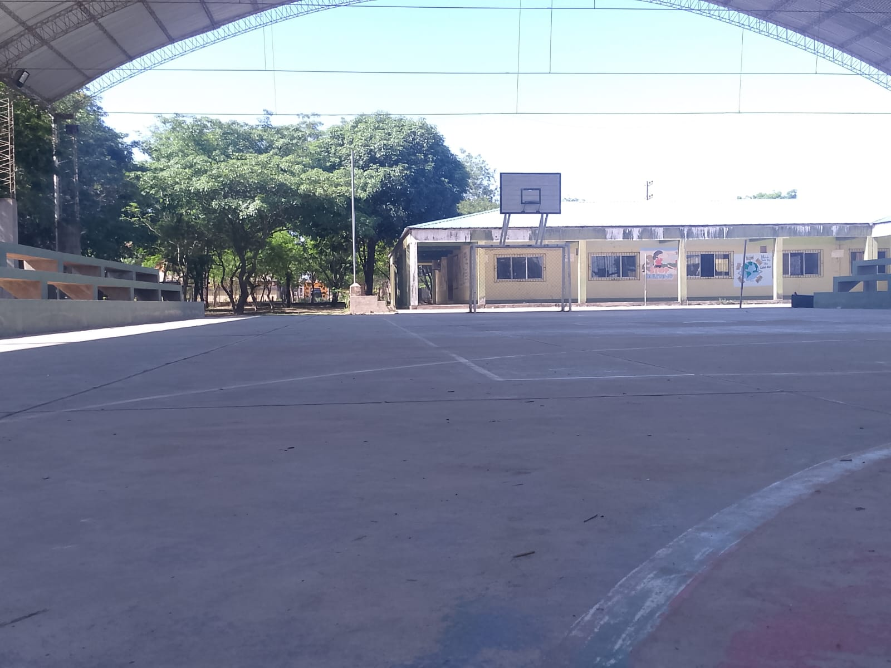
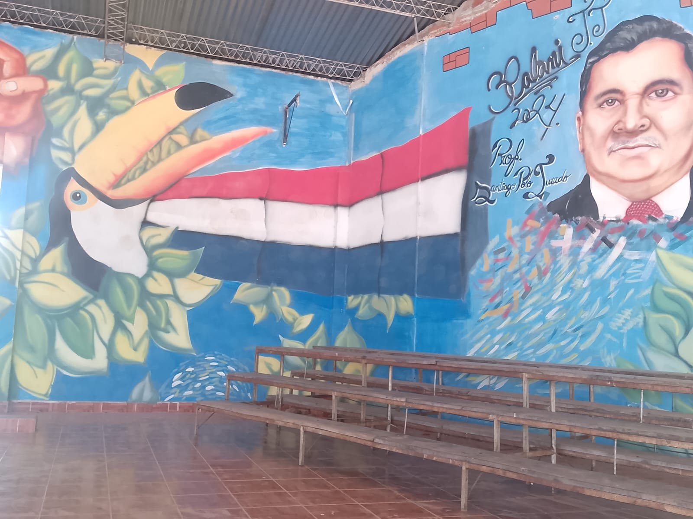

Compromiso con la Comunidad
Fomento de la Agricultura Local: Generamos empleo
en la comunidad y apoyamos el desarrollo rural.
Cuidado del Medio Ambiente:
Nuestros métodos de producción minimizan la huella de
carbono.
Valor Familiar: Cada compra apoya a
las familias que cuidan la tierra y mantienen vivas
nuestras tradiciones.